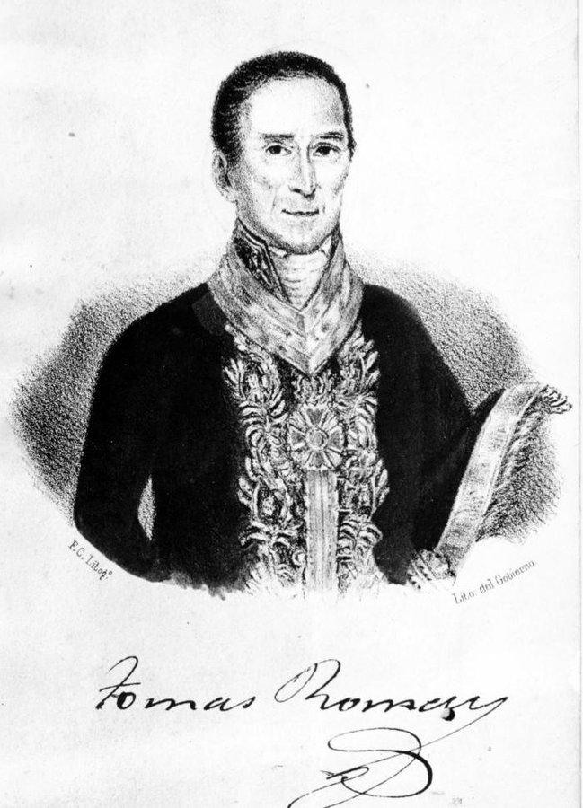
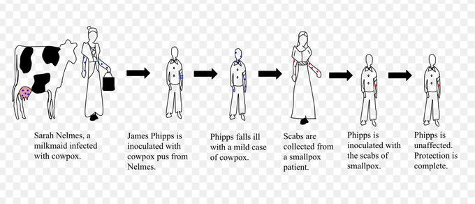
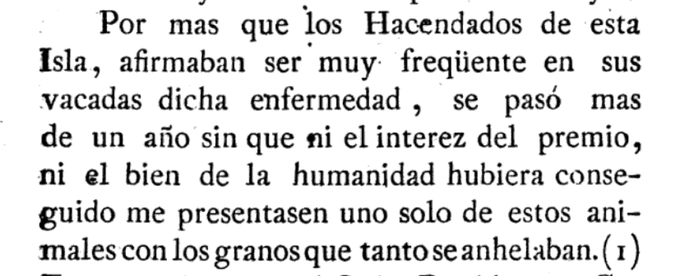
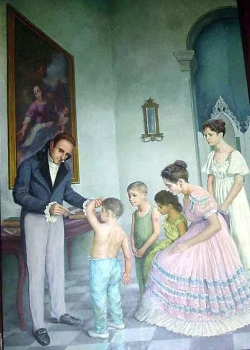
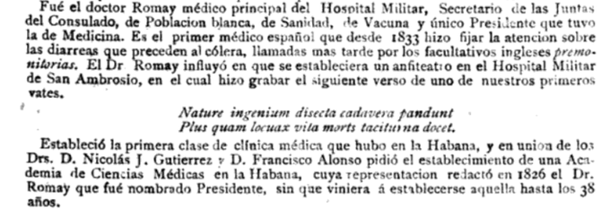

Los Hilos de Monik
Tomás Romay y la vacunación
Publicado el 13 de abril de 2021 - 20 tweets - Hilo original en Twitter
1
Considerado el primer higienista cubano, Director de la Sociedad Económica Amigos del País, fundador del Papel Periódico de La Habana, apicultor... ese fue Tomás Romay y Chacón
Pero hablemos hoy de la labor por la que más se le conoce: introducir la vacunación en Cuba.
2
La viruela fue introducida en Cuba por un criado de Pánfilo Narváez. En el SXVIII se estima más de la mitad de la población se infectaba y al menos un 20% moría a consecuencia de ella.
Romay NO descubrió la cura, pero fue pionero en vacunar a la población en Cuba.
3
En 1768, el médico inglés John Fewster se dio cuenta de aquellas personas que se infectaban con la viruela vacuna, eran luego inmunes a la viruela común.
Otro inglés, Edward Jenner, notó que las lecheras eran generalmente inmunes a la viruela.
4
La teoría de Jenner era que durante el ordeño, entraban en contacto con el pus de las ampollas de las vacas (conteniendo el virus de la viruela bovina, menos virulenta que la humana) lo cual las inmunizaba.
Y en 1796 inoculó al hijo de su jardinero, de 8 años, para probarlo.
5
Jenner inoculó a James Phipps con el pus de las lesiones de la lechera Sarah Nelmes. Días después, lo expuso a la viruela y no enfermó. Demostró que el pus protector de la viruela vacuna podría inocularse eficazmente de persona a persona y no solo directamente del ganado.
6
Tomás Romay seguía muy de cerca el tema. En 1795 escribió un artículo para el Papel Periódico de la Habana, donde defendía la inoculación como método idóneo para proteger de la viruela, es decir, usar el pus de los enfermos de viruela humana para infectar a personas sanas.
7
Las noticias sobre procedimiento de Jenner llegaron a Cuba en 1802. La Sociedad Económica de La Habana imprimió 500 ejemplares con detalles sobre el descubrimiento de la vacuna.
Romay se dedicó entonces a investigar la enfermedad entre el ganado vacuno de la isla, sin éxito.
8
El Papel Periódico de La Habana publicó la creación de 2 premios: 400 pesetas para quien descubriera el "fluido vaccino" tomado de vacas en Cuba, y 300 pesetas, para quien la trajera del extranjero. En ambos casos, Romay tenía que certificar la veracidad y utilidad del fluido.
9
Es un poco chistoso leer en el texto "Memoria sobre la introducción y progresos de la vacuna en la Isla de Cuba" como no se pudo obtener una muestra de vacas cubanas.
10
El 22 de marzo de 1803 llegaron de Filadefia, EE.UU. tres muestras de pus, colectado el 22 de enero y el 7 de febrero. Romay la aplicó en sus propios hijos, pero la vacuna no prendió.
Finalmente, en febrero de 1804, obtuvo la muestra de una mujer proveniente de Puerto Rico.
11
María Luisa Bustamante vacunó la víspera del viaje a su hijo de 10 años y a dos sirvientas de 6 y 8 años. Ella permitió que Romay tomara muestras, y cobró la recompensa.
Con el pus obtenido, Romay vacunó a sus cinco hijos y luego a casi 200 personas más.
12
Aún así, no fue el primero. Un mes antes, en Santiago de Cuba, el cirujano francés M. Vignard, procedente de Saint Thomas, vacunó a una niña con el virus que trajo entre cristales.
Sin embargo, el crédito de trazar una estrategia de vacunación es de Romay.
13
La "Memoria ..." cuenta que hubo oposición y falsificaciones de la vacuna.
Para probar su efectividad, Romay inoculó de viruela a 4 niños ya inmunizados (2 de ellos hijos suyos) ante el Protomedicato, y así certificar que no enfermarían.
14
El Gobernador autorizó además a que Romay comenzara a vacunar a los nuevos reclutas llegados de Europa, como forma preventiva para evitar el temido vómito negro.
Romay enseñó a otros médicos a transmitir la viruela a vacas para luego extraer el pus e inmunizar a poblaciones.
15
Romay demostró que la vacunación era más segura y menos traumática que la inoculación.
Recibió el apoyo del Obispo de La Habana, Juan José Díaz de Espada, quien escribió una carta pastoral alentando la campaña de la vacunación.
Y destaquemos el rol de los niños...
16
Al no existir medios de refrigeración, hacían falta sujetos recientemente infectados. En las poblaciones, se infectaban las vacas, pero para llevar la vacuna de una ciudad a otra, se inmunizaban niños (casi siempre esclavos) y al llegar, se les extraía el pus.
17
Cuando el médico español Francisco Javier Balmis llegó a La Habana, al frente de la Real Expedición Filantrópica de la Vacuna en mayo de 1804, se mostró muy sorprendido ante el número de vacunaciones ya realizadas por Romay.
(esta expedición merece hilo aparte, por cierto)
18
Balmis dejó instalada una Junta Central de la Vacuna, que fue dirigida durante tres décadas por Tomás Romay, en el transcurso de las cuales más de 300.000 personas fueron vacunadas en Cuba.
La Junta Central de la Vacuna funcionó hasta 1849, año en que falleció Romay de cáncer.
19
Gran importancia tuvo la decisión de establecer la obligatoriedad de la vacunación: no se admitía en ningún colegio a un alumno si no se acompañaba de un certificado de vacunación antivariolosa, y la vacunación era obligatoria a todos los esclavos que llegaban al puerto.
20
La labor médica de Tomás Romay fue mucho más que la vacuna: fue el primero en investigar en profundidad la fiebre amarilla, estudió las aguas medicinales de Cuba, publicó textos sobre varios órganos ... y además, escribió sobre botánica y apicultura.
